MELODIA / HARMONIA ASSET WORKSHOP
햇살을 머금은 악기 공방.
청록 기와 · 아이보리 석재 · 황동 장식 · 세이지 식생
하모니아 대표 장면을 위한 공통 형태와 재질 기준
#233D38
#24594E
#A3C5AA
#E9BD63
#FFF8E8
#F3EAD5
#DECDA7
01 / SOL
갈색 머리, 청록 의상, 황동 스카프.
가방과 머리핀의 비대칭을 방향마다 유지합니다.
02 / MUSIC BOX TOWER
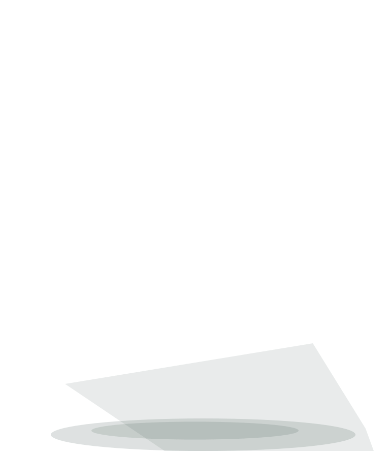
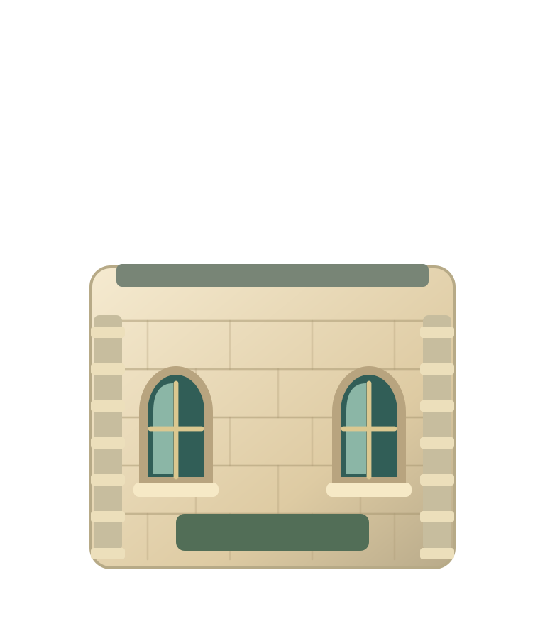
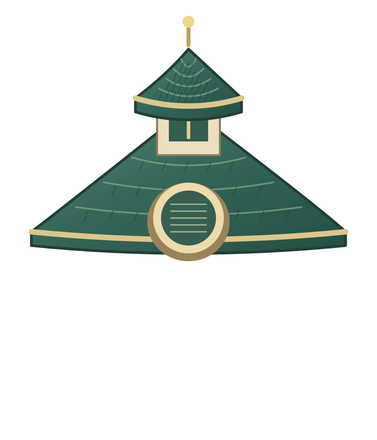
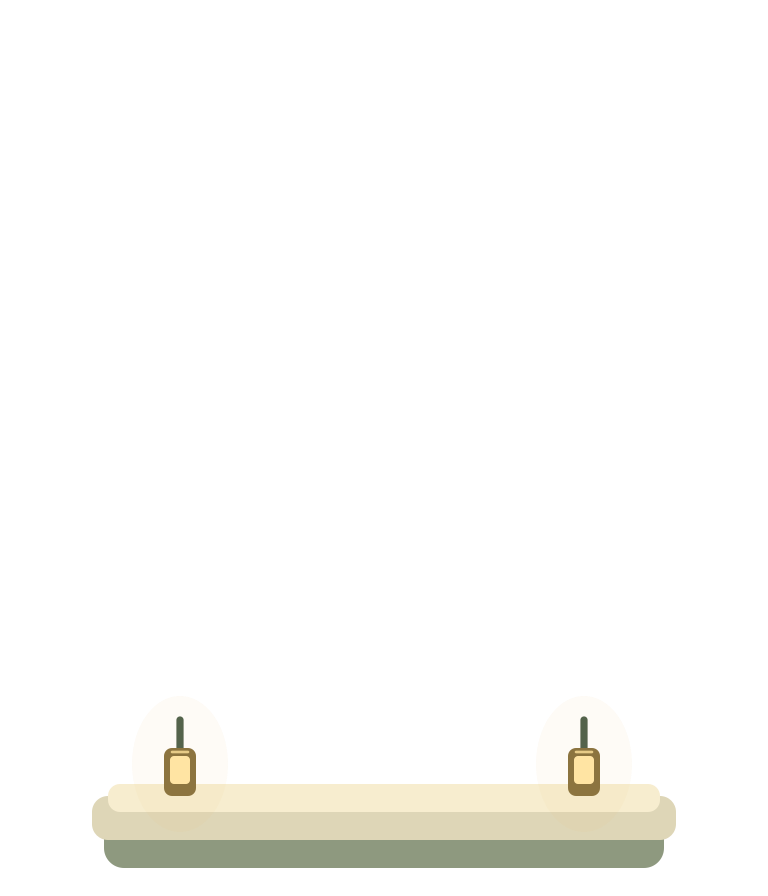
넓은 지붕과 작은 음악등 탑.
문과 음악 기호는 별도 레이어입니다.
03 / GARDEN & INTERFACE
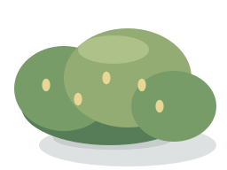
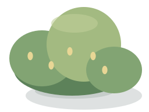
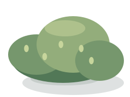
작은 화면에서도 구분되는 큰 면과 윤곽.
장식은 낮게, 행동은 명확하게.
광원 좌상단 · 투영 그림자 우하단
규격 32px 타일 · x4 출력 · 발 피벗 고정
기호 기존 원본 합성 · 방향/학습 데이터 보존
← 실제 게임 비교 화면 · 아래는 투명도 확인용 바둑판 위에 올린 편집 가능한 SVG 원본입니다.
솔과 클레프 · 동작 프레임
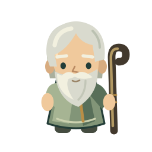
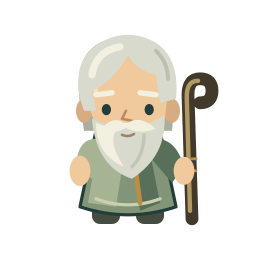
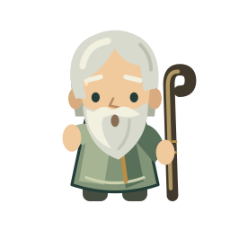
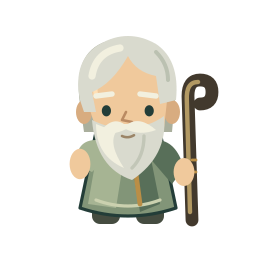
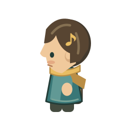
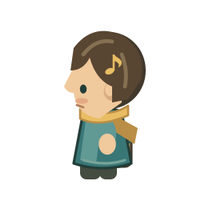
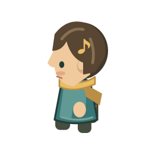
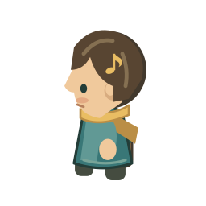
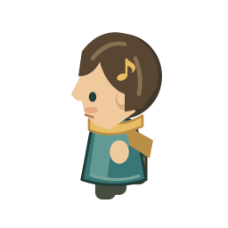
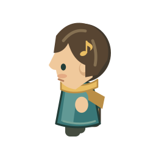
탑 · 문 · 지형 · 식생 · 소품
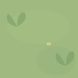
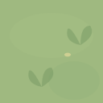
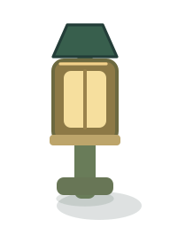
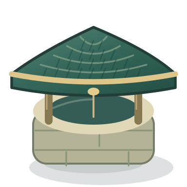
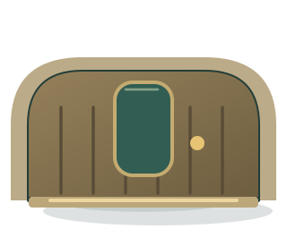
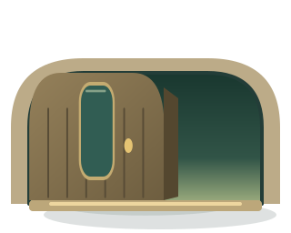
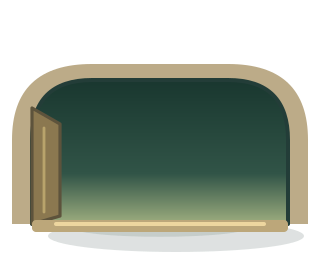
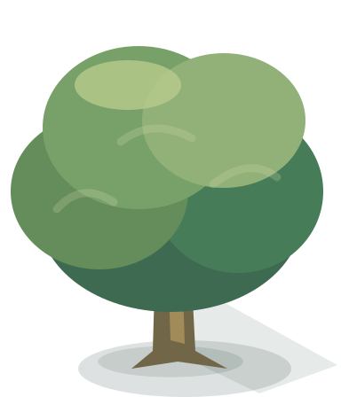
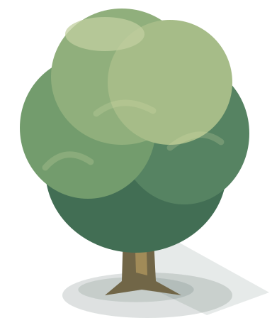
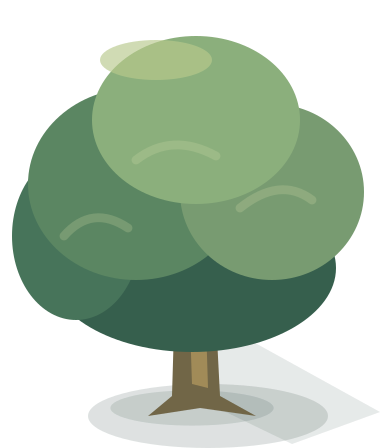